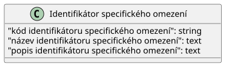

Tento dokument je otevřenou formální normou ve smyslu § 3a odst. 3 zákona č. 106/1999 Sb., o svobodném přístupu k informacím, pro zveřejňování informací o oprávnění k zastupování z Registru práv a povinností ve smyslu § 52 zákona č. 111/2009 Sb. o základních registrech v podobě otevřených dat.
Otevřená data dle této otevřené formální normy jsou publikována ve formátu JSON-LD, se kterým lze pracovat standardními softwarovými prostředky pro práci s formátem JSON. Formát JSON-LD navíc umožňuje přímou interpretaci dat v podobě datového modelu RDF.
Tento dokument byl vygenerován automaticky nástrojem Dataspecer.
| Artefakt | Odkaz |
|---|---|
| JSON schéma | ./identifikator-specifickeho-omezeni_schema.json |
| JSON-LD kontext | ./identifikator-specifickeho-omezeni.jsonld |
| PlantUML diagram | ./konceptuální-model.plantuml |
| Konceptuální diagram | ./konceptuální-model.svg |
| Dokumentace | ./ |

Datová struktura pro Identifikátor specifického omezení. 1 až N specifických omezení (identifikátorů).
JSON Schéma zachycující strukturu pro Identifikátor specifického omezení je definováno v souboru ./identifikator-specifickeho-omezeni_schema.json. Datová sada je tvořena seznamem prvků odpovídajících datové struktuře Identifikátor specifického omezení. Prvky jsou uvedeny v poli `položky`.
kód-identifikátoru-specifického-omezení^SOI-[0-9]+$název-identifikátoru-specifického-omezenípopis-identifikátoru-specifického-omezení{kind=link}